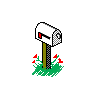

helprefunds · privacy
Brownie Digital is one person, so you always hear back from whoever made the thing.





get in touch
Email bennettkiki5@gmail.com. Say which Mac and macOS you're on, which host (Logic, Live…) and, for licence questions, the email you bought with. Replies usually within two days.
common questions
macOS says it can't open the installer
Expected: Brownie Digital isn't in Apple's paid developer programme. Click Done, open System Settings › Privacy & Security, scroll to Security and click Open Anyway next to the installer's name. Only once.
The plug-in doesn't show up
Logic Pro › Settings › Plug-in Manager, select Brownie Digital, click "Reset & Rescan Selection". In other DAWs, rescan plug-ins (VST3 folder: /Library/Audio/Plug-Ins/VST3).
I lost my licence key
It's in your purchase email from Lemon Squeezy, and always at app.lemonsqueezy.com/my-orders with the email you bought with.
I got a new Mac
One key unlocks 3 Macs. If you've used all three, email and I'll free them up.
Does it need the internet?
Only to unlock, and for a quick licence check now and then. Offline it keeps working for 30 days at a time.
Which Macs and DAWs does it work with?
Apple Silicon and Intel Macs on macOS 11 Big Sur or newer. It installs as AU (Logic, GarageBand), VST3 (Ableton Live, FL Studio, Bitwig, Cubase, Studio One, REAPER…) and LV2 (REAPER, Ardour), plus a stand-alone app. No Pro Tools (AAX) for now. Try the free trial first to check it on your setup.
How do I uninstall it?
Delete "Microsampler 85.component" and "Microsampler 85 FX.component" from /Library/Audio/Plug-Ins/Components, the two ".vst3" files from /Library/Audio/Plug-Ins/VST3, the two ".lv2" folders from /Library/Audio/Plug-Ins/LV2, and the app from /Applications.
refunds
Try the free trial first: it's the same download, so you can check it runs on your Mac before paying.
If it doesn't work on your Mac and we can't fix it, or you're simply not happy, email within 14 days of buying for a full refund. No forms. A refunded licence key stops working.
Payments and refunds are processed by Lemon Squeezy, the reseller and merchant of record for Brownie Digital orders.
privacy
This website has no cookies, no analytics and no tracking. It's hosted on GitHub Pages, which keeps standard server logs.
Buying happens on Lemon Squeezy's checkout, under their privacy policy. Brownie Digital sees your name, email and order, never your card.
The licence check. When you unlock Microsampler 85', and about once a day after that while you're online, it sends your licence key (and the activation ID Lemon Squeezy gave that Mac) to Lemon Squeezy's licence server. When it unlocks a Mac it also sends that Mac's name (as set in System Settings), so you can tell your 3 activations apart. Nothing else: no music, no samples, no usage data.
Microphone. The app only listens when you press SAMPLING or switch on live input, and the audio never leaves your Mac.
credits
Microsampler 85' was created by Kiki Wafford. Audio engine and testing made with the assistance of AI tools.
Old-web GIFs on this site come from the GeoCities archive (GifCities, Internet Archive) and BrycesPix.